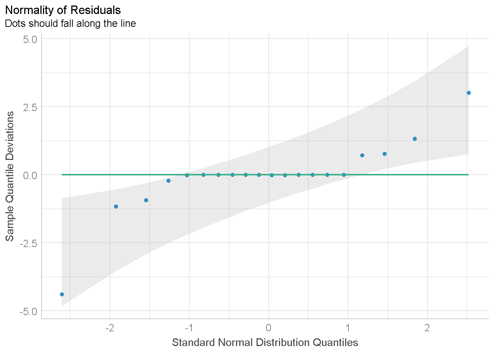
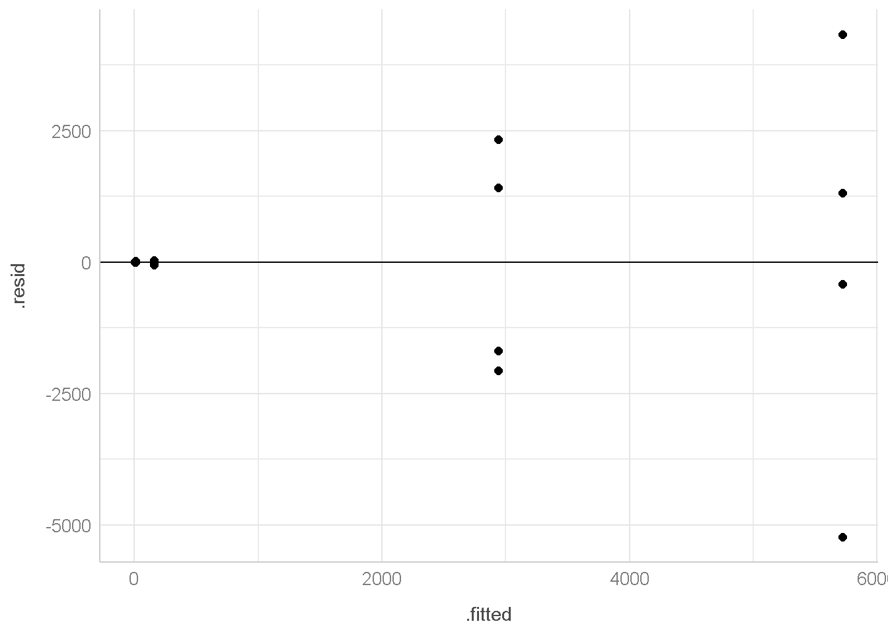
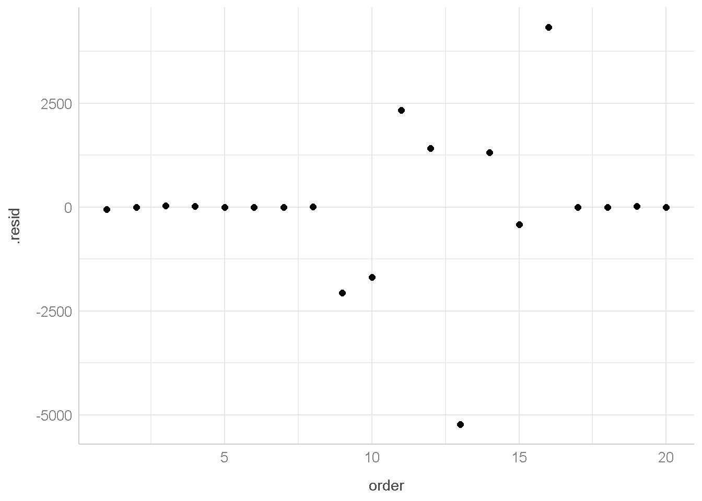
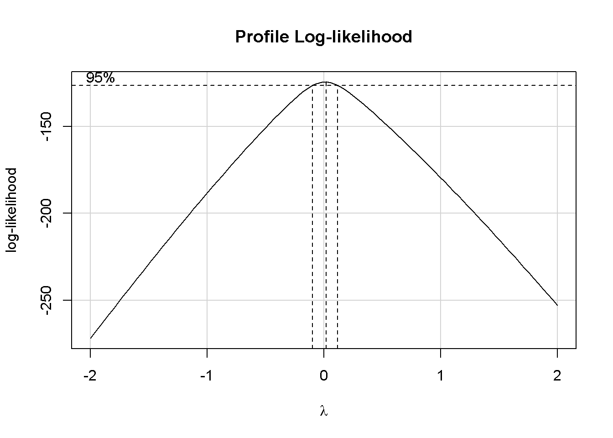
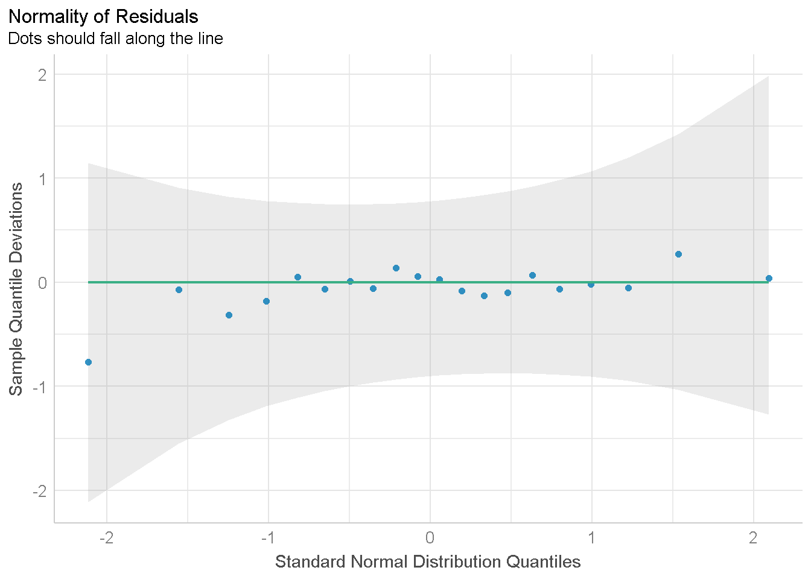
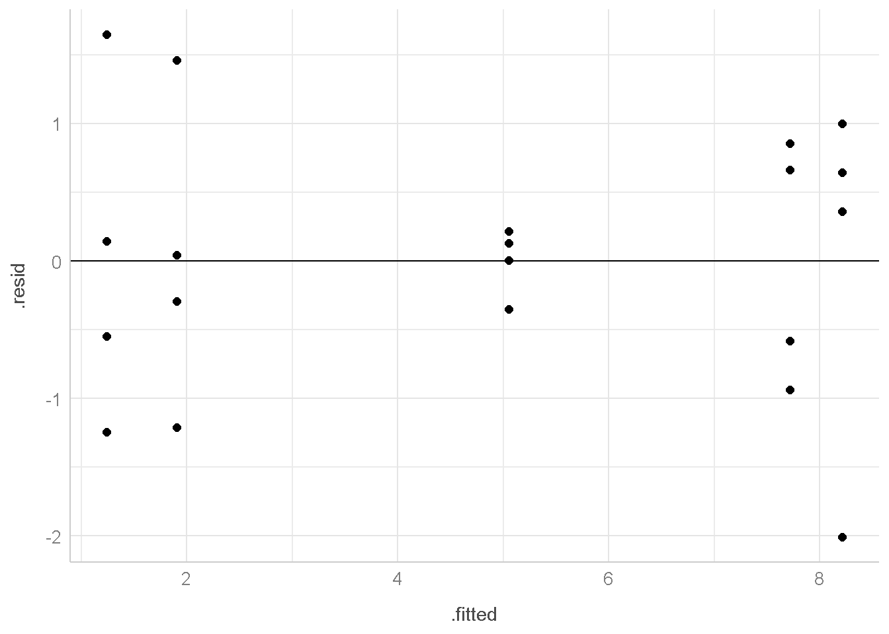
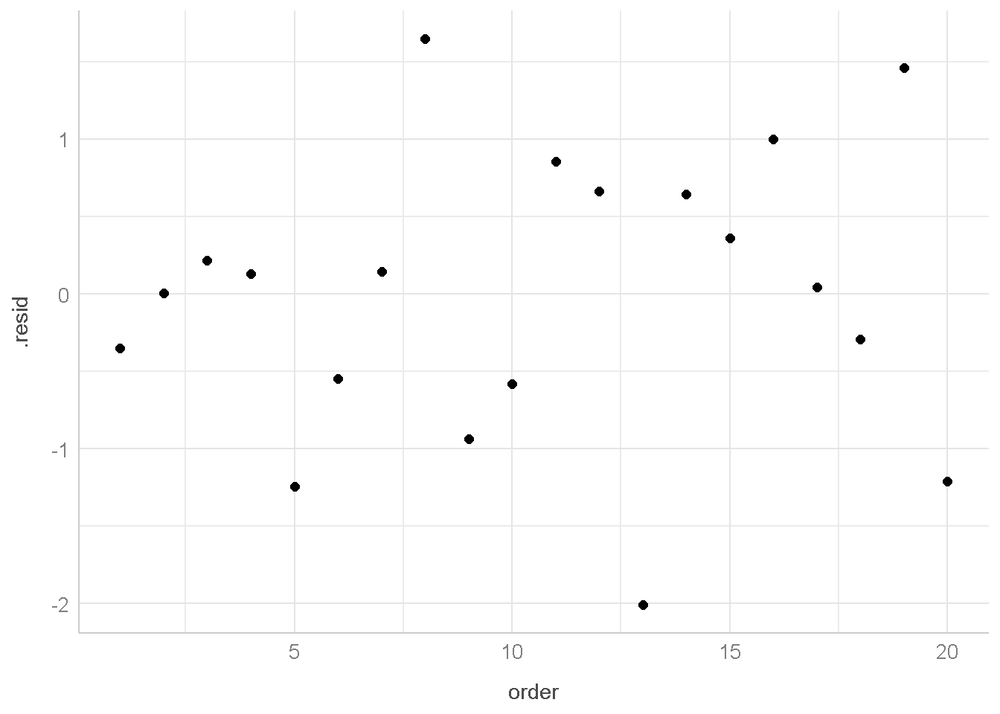

install.packages("tidyverse")
install.packages("broom")
install.packages("performance")
install.packages("see")
install.packages("car")
install.packages("fbasics")
install.packages("ggpubr")Pemeriksaan dan Pengujian Asumsi ANOVA dengan R
Compare Means
Analysis of Experiments Data
Package
Install package berikut jika belum ada
library(tidyverse)
library(performance)
library(see)
library(car)
library(broom)
library(fBasics)
library(ggpubr)Data
Sebuah percobaan dilakukan untuk menyelidiki efektivitas lima bahan isolasi (insulating materials). Bahan Isolasi merupakan bahan yang tidak dapat mengalirkan arus listrik atau panas. Empat sampel dari setiap bahan yang diuji padategangan tinggi untuk mempercepat waktu kegagalan (failure time).Waktu kegagalan menunjukkan waktu saat bahan isolasi tidak bisa lagi menghambat arus listrik atau panas. Waktu kegagalan (dalam menit) ditunjukkan di bawah ini:

Import Data ke dalam R
Untuk import data ke R kita bisa langsung menuliskan data nya di R dengan sintaks seperti dibawah ini
bahan_isolasi <- read.table(header = TRUE,
text="Bahan WaktuKegagalan
A 110
A 157
A 194
A 178
B 1
B 2
B 4
B 18
C 880
C 1256
C 5276
C 4355
D 495
D 7040
D 5307
D 10050
E 7
E 5
E 29
E 2
")
bahan_isolasi Bahan WaktuKegagalan
1 A 110
2 A 157
3 A 194
4 A 178
5 B 1
6 B 2
7 B 4
8 B 18
9 C 880
10 C 1256
11 C 5276
12 C 4355
13 D 495
14 D 7040
15 D 5307
16 D 10050
17 E 7
18 E 5
19 E 29
20 E 2Analysis of Variance (ANOVA)
Hipotesis yang diuji pada kasus ini adalah
\[ \begin{aligned} H_{0} &: \text{rerata waktu kegagalan sama untuk semua jenis bahan} \\ H_{1} &: \text{terdapat minimal sepasang jenis bahan yang memiliki rerata waktu kegagalan tidak sama} \end{aligned} \]
anova1 <- aov(WaktuKegagalan ~ Bahan,data = bahan_isolasi)tidy(anova1)# A tibble: 2 × 6
term df sumsq meansq statistic p.value
<chr> <dbl> <dbl> <dbl> <dbl> <dbl>
1 Bahan 4 103191489. 25797872. 6.19 0.00379
2 Residuals 15 62505657 4167044. NA NA karena p-value yang dihasilkan dari uji ANOVA kurang dari 0.05 maka cukup bukti untuk mengakatakan bahwa \(H_{0}\) ditolak atau dengan kata lain terdapat minimal sepasang jenis bahan yang memiliki rata-rata waktu kegagalan tidak sama
Pemeriksaan Asumsi ANOVA
Pemeriksaan asumsi ANOVA dilakukan pada residual nya. Untuk mengeluarkan residualnya bisa menggunakan sintaks dibawah ini
aug1 <- augment(anova1)aug1# A tibble: 20 × 8
WaktuKegagalan Bahan .fitted .resid .hat .sigma .cooksd .std.resid
<int> <chr> <dbl> <dbl> <dbl> <dbl> <dbl> <dbl>
1 110 A 160. -49.7 0.25 2113. 0.0000528 -0.0281
2 157 A 160. -2.75 0.25 2113. 0.000000161 -0.00156
3 194 A 160. 34.3 0.25 2113. 0.0000250 0.0194
4 178 A 160. 18.3 0.25 2113. 0.00000710 0.0103
5 1 B 6.25 -5.25 0.25 2113. 0.000000588 -0.00297
6 2 B 6.25 -4.25 0.25 2113. 0.000000385 -0.00240
7 4 B 6.25 -2.25 0.25 2113. 0.000000108 -0.00127
8 18 B 6.25 11.7 0.25 2113. 0.00000295 0.00665
9 880 C 2942. -2062. 0.25 2015. 0.0907 -1.17
10 1256 C 2942. -1686. 0.25 2048. 0.0606 -0.954
11 5276 C 2942. 2334. 0.25 1986. 0.116 1.32
12 4355 C 2942. 1413. 0.25 2067. 0.0426 0.799
13 495 D 5723 -5228 0.25 1364. 0.583 -2.96
14 7040 D 5723 1317. 0.25 2074. 0.0370 0.745
15 5307 D 5723 -416. 0.25 2109. 0.00369 -0.235
16 10050 D 5723 4327 0.25 1638. 0.399 2.45
17 7 E 10.8 -3.75 0.25 2113. 0.000000300 -0.00212
18 5 E 10.8 -5.75 0.25 2113. 0.000000705 -0.00325
19 29 E 10.8 18.2 0.25 2113. 0.00000710 0.0103
20 2 E 10.8 -8.75 0.25 2113. 0.00000163 -0.00495Normalitas (Residual Menyebar Normal)
Pemeriksaan Normalitas bisa dilakukan dengan menggunakan grafik atau uji hipotesis.
Grafik
untuk menampilkan grafik dibawah ini terlebih dahulu harus memanggil package performance dan see
plot(check_normality(x = anova1),type="qq")
Dari grafik ini, terdapat beberapa titik residual yang tidak mengikuti pola garis maka diduga bahwa asumsi normalitas tidak dipenuhi.
Uji Hipotesis
Hipotesis yang diuji untuk pemeriksaan normalitas adalah
\[ \begin{aligned} H_{0} &: \text{galat menyebar normal} \\ H_{1} &: \text{galat tidak menyebar normal} \end{aligned} \]
Uji Normalitas bisa dilakukan dengan beberapa metode pengujian. Untuk itu, akan dibuat fungsi R agar dapat menjalankan metode-metode pengujian tersebut. Fungsi R ini tidak perlu dipahami secara serius karena dapat digunakan untuk berbagai kondisi data. Fungsi R buatan ini sangat bergantung pada package fbasics
## fungsi R buatan
normal_test <- function(data,variable){
ad_stat <- adTest(
data %>%
pull(variable)
)@test$statistic
ks_stat <- ksnormTest(
data %>%
pull(variable)
)@test$statistic
jb_stat <- jarqueberaTest(
data %>%
pull(variable)
)@test$statistic
shapiro_stat <- shapiroTest(
data %>%
pull(variable)
)@test$statistic
ad_p.value <- adTest(
data %>%
pull(variable)
)@test$p.value
ks_p.value <- ksnormTest(
data %>%
pull(variable)
)@test$p.value
jb_p.value <- jarqueberaTest(
data %>%
pull(variable)
)@test$p.value
shapiro_p.value <- shapiroTest(
data %>%
pull(variable)
)@test$p.value
all_stats <- data.frame(statistic=c(ad_stat, ks_stat[1],
jb_stat,
shapiro_stat),
p.value=c(
ad_p.value, ks_p.value[1],
jb_p.value,
shapiro_p.value
)) %>%
mutate(across(where(is.numeric),~ round(.x,3))) %>%
mutate(name=c("Anderson-Darling",
"Kolmogorov-Smirnov",
"Shapiro-Wilk",
"Jarque-Bera")) %>%
relocate(name)
rownames(all_stats) <- NULL
return(all_stats)
}normal_test(data = aug1,
variable = ".resid") name statistic p.value
1 Anderson-Darling 1.959 0.000
2 Kolmogorov-Smirnov 0.588 0.000
3 Shapiro-Wilk 8.113 0.017
4 Jarque-Bera 0.809 0.001karena p-value yang dihasilkan dari uji normalitas kurang dari 0.05 maka \(H_{0}\) ditolak atau dengan kata lain residual tidak menyebar normal
Homogenitas
Pemeriksaan Homogenitas bisa dilakukan dengan menggunakan grafik atau uji hipotesis.
Grafik
untuk menampilkan grafik dibawah ini menggunakan package ggpubr
ggscatter(data = aug1,
x=".fitted",
y=".resid")+
geom_hline(aes(yintercept=0)) +
theme_lucid()
Dari grafik ini, terdapat pola berbentuk corong (funnel shape) maka diduga bahwa asumsi homogenitas tidak dipenuhi.
Uji Hipotesis
Hipotesis yang diuji untuk pemeriksaan homogenitas adalah
\[ \begin{aligned} H_{0} &: \text{ragam homogen antar perlakukan} \\ H_{1} &: \text{ragam tidak homogen antar perlakuan} \end{aligned} \]
Uji Homogenitas bisa dilakukan dengan beberapa metode pengujian dibawah ini
# Bartlett (asumsi residual menyebar normal)
check_homogeneity(anova1,method="bartlett")Warning: Variances differ between groups (Bartlett Test, p = 0.000).# Fligner (merupakan uji nonparametrik)
check_homogeneity(anova1,method="fligner")Warning: Variances differ between groups (Fligner-Killeen Test, p = 0.006).karena p-value yang dihasilkan dari uji homogenitas kurang dari 0.05 maka \(H_{0}\) ditolak atau dengan kata lain ragam tidak homogen antar perlakukan
Independent
Grafik
Pemeriksaan Independent bisa dilakukan dengan menggunakan grafik.
untuk menampilkan grafik dibawah ini menggunakan package ggpubr
aug1 %>%
mutate(order=seq(nrow(aug1))) %>%
ggscatter(x="order",y=".resid")+
theme_lucid()
Dari grafik ini, tidak terbentuk pola tertentu (misal pola linear) maka diduga bahwa asumsi Independent dipenuhi.
Penanganan Pelanggaran Asumsi
Transformasi Box-cox
Transformasi Box-Cox didefinisikan sebagai
\[ \begin{equation} y^{(\lambda)} = \begin{cases} \frac{y^{\lambda}-1}{\lambda} & \text{untuk} \space \lambda\neq 0 \\ \ln{(y)} & \text{untuk} \space \lambda= 0 \\ \end{cases} \end{equation} \]
untuk mendapatkan nilai \(\lambda\) optimal dapat digunakan pendugaan MLE, yaitu dengan mendapatkan nilai \(\lambda\) yang memaksimumkan fungsi log-likelihood. Hal ini bisa dilihat pada grafik yang diperoleh dari fungsi boxCox pada package car
boxCox(anova1)
Berdasarkan gambar diketahui bahwa nilai lambda yang optimum ada disekitar nol. Oleh karena itu kita bisa langsung memakai \(\lambda = 0\).
Cara lain untuk mendapatkan nilai lambda optimum adalah dengan menggunakan fungsi powerTransform dari package car yang menampilkan hasil pendugaan titik (point estimate), selang kepercayaan dan uji hipotesis dengan Likelihood Ratio Test (LRT) dari \(\lambda\)
boxcox_res <-powerTransform(anova1)
summary(boxcox_res)bcPower Transformation to Normality
Est Power Rounded Pwr Wald Lwr Bnd Wald Upr Bnd
Y1 0.0101 0 -0.094 0.1141
Likelihood ratio test that transformation parameter is equal to 0
(log transformation)
LRT df pval
LR test, lambda = (0) 0.03612792 1 0.84925
Likelihood ratio test that no transformation is needed
LRT df pval
LR test, lambda = (1) 110.0337 1 < 2.22e-16# pembulatan pada lambda
boxcox_res$roundlamY1
0 Berdasarkan output nya didapatkan bahwa
- penduga titik nya \(\lambda=0.0101\) atau dibulatkan menjadi \(\lambda=0\).
- selang kepercayaan \(-0.094 \leq \lambda \leq 0.1141\)
- Untuk uji hipotesis yang pertama (Log Transformation)
\[ \begin{aligned} H_{0} &: \lambda = 0 \space \\ H_{1} &: \lambda \neq 0 \end{aligned} \]
karena p-value dari uji yang pertama besar (lebih dari 0.05) maka tidak tolak \(H_{0}\) atau dengan kata lain kita bisa menggunakan \(\lambda=0\) 4. Untuk uji hipotesis yang kedua (no transformation)
\[ \begin{aligned} H_{0} &: \lambda = 1 \space \\ H_{1} &: \lambda \neq 1 \end{aligned} \]
karena p-value dari uji yang pertama kecil (kurang dari 0.05) maka tolak \(H_{0}\) atau dengan kata lain kita bisa menggunakan \(\lambda \neq 1\). Nilai \(\lambda \neq 1\) implikasinya ada transformasi dan nilai \(\lambda = 1\) implikasinya tidak dibutuhkan transformasi.
bahan_isolasi_trans <- bahan_isolasi %>%
mutate(WaktuKegagalan_Trans =bcPower(WaktuKegagalan,boxcox_res$roundlam))
anova2 <- aov(WaktuKegagalan_Trans ~ Bahan,data = bahan_isolasi_trans)tidy(anova2)# A tibble: 2 × 6
term df sumsq meansq statistic p.value
<chr> <dbl> <dbl> <dbl> <dbl> <dbl>
1 Bahan 4 165. 41.3 37.7 0.000000118
2 Residuals 15 16.4 1.10 NA NA Pemeriksaan kembali Asumsi ANOVA
Pemeriksaan asumsi ANOVA dilakukan pada residual nya. Untuk mengeluarkan residualnya bisa menggunakan sintaks dibawah ini
aug2 <- augment(anova2)aug2# A tibble: 20 × 8
WaktuKegagalan_Trans Bahan .fitted .resid .hat .sigma .cooksd .std.resid
<dbl> <chr> <dbl> <dbl> <dbl> <dbl> <dbl> <dbl>
1 4.70 A 5.05 -0.351 0.25 1.08 1.00e-2 -0.387
2 5.06 A 5.05 0.00465 0.25 1.08 1.76e-6 0.00513
3 5.27 A 5.05 0.216 0.25 1.08 3.79e-3 0.239
4 5.18 A 5.05 0.130 0.25 1.08 1.37e-3 0.144
5 0 B 1.24 -1.24 0.25 1.01 1.25e-1 -1.37
6 0.693 B 1.24 -0.549 0.25 1.07 2.45e-2 -0.606
7 1.39 B 1.24 0.144 0.25 1.08 1.68e-3 0.159
8 2.89 B 1.24 1.65 0.25 0.957 2.20e-1 1.82
9 6.78 C 7.72 -0.936 0.25 1.04 7.11e-2 -1.03
10 7.14 C 7.72 -0.581 0.25 1.07 2.74e-2 -0.641
11 8.57 C 7.72 0.855 0.25 1.05 5.92e-2 0.943
12 8.38 C 7.72 0.663 0.25 1.06 3.56e-2 0.731
13 6.20 D 8.21 -2.01 0.25 0.889 3.28e-1 -2.22
14 8.86 D 8.21 0.645 0.25 1.07 3.38e-2 0.712
15 8.58 D 8.21 0.363 0.25 1.08 1.07e-2 0.400
16 9.22 D 8.21 1.00 0.25 1.04 8.13e-2 1.10
17 1.95 E 1.90 0.0420 0.25 1.08 1.43e-4 0.0463
18 1.61 E 1.90 -0.295 0.25 1.08 7.04e-3 -0.325
19 3.37 E 1.90 1.46 0.25 0.985 1.74e-1 1.61
20 0.693 E 1.90 -1.21 0.25 1.02 1.19e-1 -1.34 Normalitas (Galat Menyebar Normal)
Pemeriksaan Normalitas bisa dilakukan dengan menggunakan grafik atau uji hipotesis.
Grafik
untuk menampilkan grafik dibawah ini terlebih dahulu harus memanggil package performance dan see
plot(check_normality(x = anova2),type="qq")
Dari grafik ini, titik-titik residual yang engikuti pola garis dan berada di dalam daerah selang kepercayaan maka diduga bahwa asumsi normalitas terpenuhi.
Uji Hipotesis
Hipotesis yang diuji untuk pemeriksaan normalitas adalah
\[ \begin{aligned} H_{0} &: \text{galat menyebar normal} \\ H_{1} &: \text{galat tidak menyebar normal} \end{aligned} \]
Uji Normalitas bisa dilakukan dengan beberapa metode pengujian.
normal_test(data = aug2,
variable = ".resid") name statistic p.value
1 Anderson-Darling 0.137 0.971
2 Kolmogorov-Smirnov 0.102 0.972
3 Shapiro-Wilk 0.259 0.878
4 Jarque-Bera 0.986 0.987karena p-value yang dihasilkan dari uji normalitas lebih besar dari 0.05 maka \(H_{0}\) tidak ditolak atau dengan kata lain galat menyebar normal
Homogenitas
Pemeriksaan Homogenitas bisa dilakukan dengan menggunakan grafik atau uji hipotesis.
Grafik
untuk menampilkan grafik dibawah ini menggunakan package ggpubr
ggscatter(data = aug2,
x=".fitted",
y=".resid")+
geom_hline(aes(yintercept=0)) +
theme_lucid()
Dari grafik ini, tidak terdapat pola berbentuk corong (funnel shape) maka diduga bahwa asumsi homogenitas terpenuhi.
Uji Hipotesis
Hipotesis yang diuji untuk pemeriksaan homogenitas adalah
\[ \begin{aligned} H_{0} &: \text{ragam homogen antar perlakukan} \\ H_{1} &: \text{ragam tidak homogen antar perlakuan} \end{aligned} \]
Uji Homogenitas bisa dilakukan dengan beberapa metode pengujian dibawah ini
# Bartlett (asumsi residual menyebar normal)
check_homogeneity(anova2,method="bartlett")OK: There is not clear evidence for different variances across groups (Bartlett Test, p = 0.211).# Fligner (merupakan uji nonparametrik)
check_homogeneity(anova2,method="fligner")OK: There is not clear evidence for different variances across groups (Fligner-Killeen Test, p = 0.351).karena p-value yang dihasilkan dari uji homogenitas lebih besar dari 0.05 maka \(H_{0}\) tidak ditolak atau dengan kata lain ragam homogen antar perlakukan
Independent
Grafik
Pemeriksaan Independent bisa dilakukan dengan menggunakan grafik.
untuk menampilkan grafik dibawah ini menggunakan package ggpubr
aug2 %>%
mutate(order=seq(nrow(aug1))) %>%
ggscatter(x="order",y=".resid")+
theme_lucid()
Dari grafik ini, tidak terbentuk pola tertentu (misal pola linear) maka diduga bahwa asumsi Independent dipenuhi.